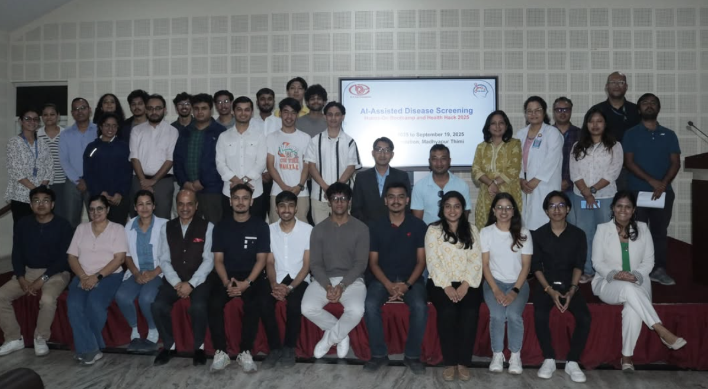

Learning to Teach
I've recently taught from both sides of the classroom: as a teaching assistant supporting Prof. Michael Bronstein's team in geometric deep learning, and as an organizer and trainer for a five-week bootcamp where 30 participants learned to apply AI to clinical disease screening.